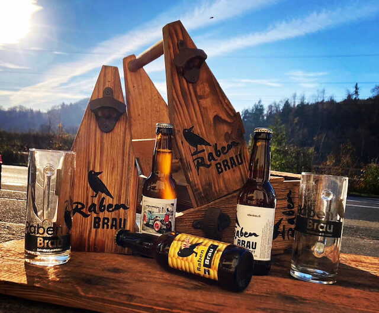
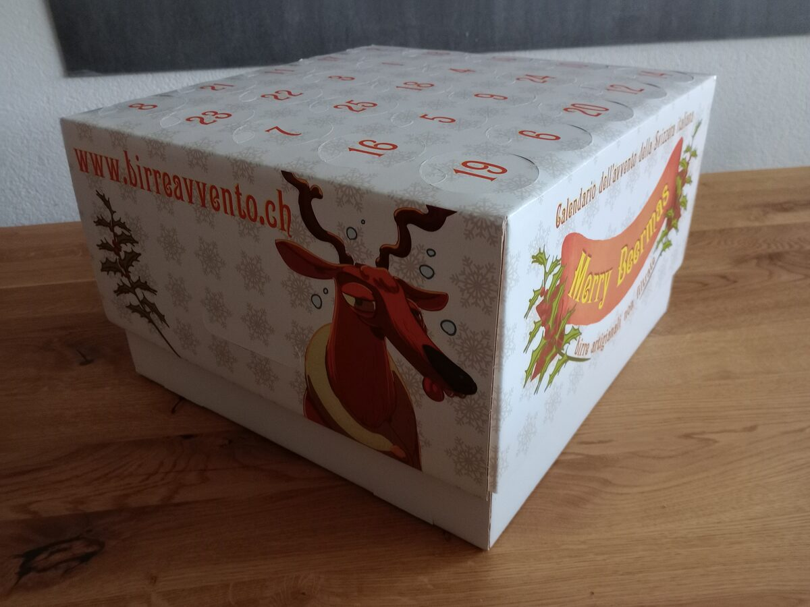
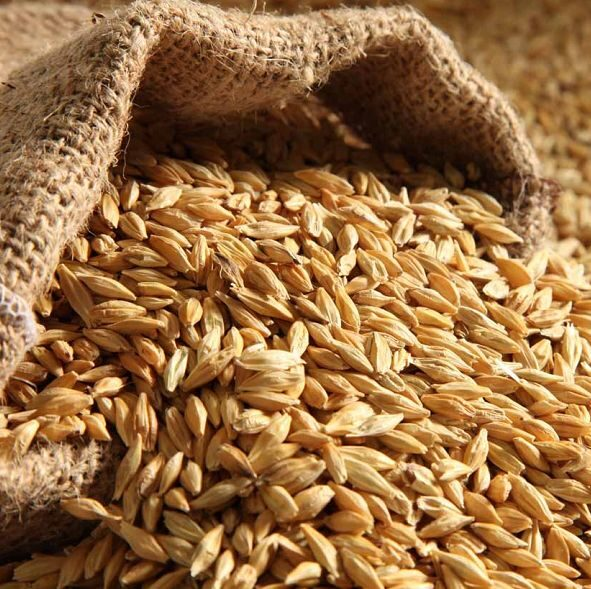
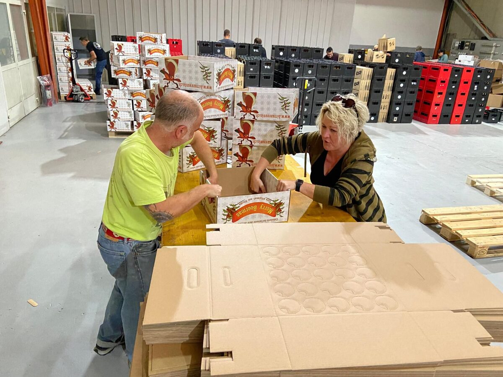
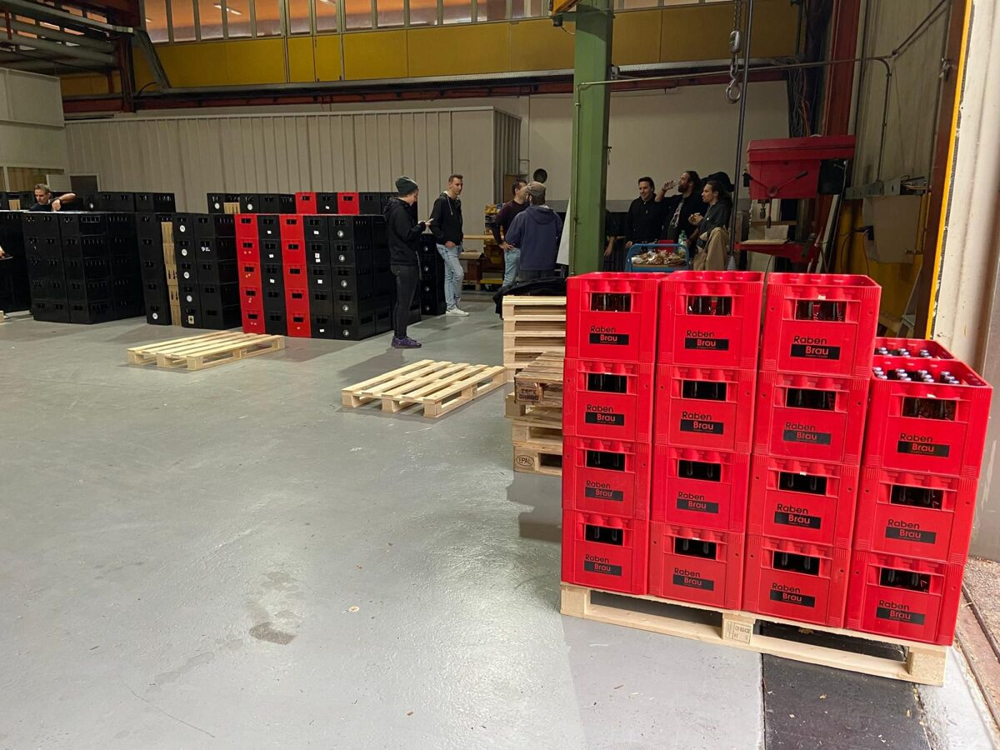

RabenBrau geht weiter
RabenBrau führt den Brauereibetrieb am gemeinsamen Standort weiter und baut dort die künftige Produktion auf.
RabenBrau · neues Kapitel
Nach 21 Jahren Brauereigeschichte und einer kurzen Pause geht es weiter: RabenBrau wird am bisherigen LUMA-Standort neu aufgebaut. Gemeinsam schaffen RabenBrau und der LUMA Verein einen Braustandort, an dem Erfahrung, Handwerk und neue Ideen zusammenkommen.

Neustart
Der bisherige RabenBrau-Standort wurde Ende 2025 geschlossen und die damalige Einrichtung verkauft. Damit endet aber nicht die Geschichte von RabenBrau. Am Standort von LUMA entsteht derzeit die Grundlage für den nächsten Abschnitt.
RabenBrau führt den Brauereibetrieb am gemeinsamen Standort weiter und baut dort die künftige Produktion auf.
LUMA wird als eigenständiger Verein weitergeführt. Die Vereinsidentität und die eigenen Bierideen bleiben bestehen.
Der LUMA Verein kann Brauanlage und Räumlichkeiten für Vereinsaktivitäten und eigene Brautage weiterhin nutzen.
RabenBrau × LUMA
RabenBrau und LUMA treten künftig enger miteinander auf, bleiben organisatorisch jedoch zwei eigenständige Einheiten. RabenBrau verantwortet den Brauereibetrieb; LUMA führt das Vereinsleben weiter und bleibt aktiver Teil des gemeinsamen Standorts.
Produktion, Verkauf und Weiterentwicklung der RabenBrau-Biere.
Vereinsleben, gemeinsame Brautage, eigene Bierideen und Veranstaltungen.
Zur LUMA Webseite →Sortiment
Das künftige Sortiment wird mit dem Neustart am neuen Standort bekanntgegeben. RabenBrau steht weiterhin für handwerklich gebrautes Bier und unkomplizierten Genuss.

Rezepte, Gebinde und Verfügbarkeit werden vor der Wiedereröffnung publiziert.
Kegs, Ausschank und individuelle Lösungen sollen auch künftig Teil des Angebots bleiben. Details folgen mit der Eröffnung.
Der Verein nutzt die gemeinsame Infrastruktur weiterhin für Vereinsbiere und Brautage.
Seit 2004
Aus vielen Jahren Brauerfahrung, Festen, Märkten, Braukursen und unzähligen Flaschen Rabensaft ist eine Marke mit Geschichte entstanden. Der Standort ändert sich – die Idee dahinter bleibt.



Kontakt
Bis zur Wiedereröffnung informieren wir hier über die nächsten Schritte. Für direkte Fragen erreichst du uns per E-Mail oder Telefon.
E-Mail
prost@rabenbrau.ch
Telefon
078 737 01 00 · Marco
Neuer Produktionsstandort
Informationen folgen mit der Eröffnung.
Impressum
Kontakt: prost@rabenbrau.ch
Telefon: 078 737 01 00
Die definitive Standortadresse wird vor der Veröffentlichung der neuen Webseite ergänzt.
Datenschutz
Diese statische Webseite verwendet in der aktuellen Version keine Analyse- oder Trackingdienste. Bei einer Kontaktaufnahme per E-Mail oder Telefon werden die übermittelten Angaben zur Bearbeitung der Anfrage verwendet.